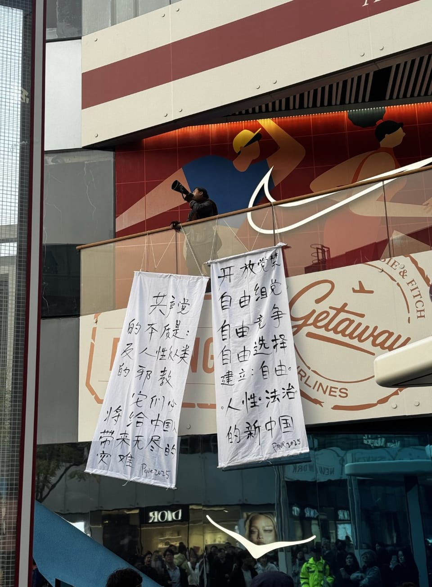

世界苦茶10月26日新闻 | 22条 | 三里屯出现抗议标语

三里屯出现抗议标语 | 特朗普表示愿意会见金正恩 | 美国防部接受匿名1.3亿美元捐助 | 湖北十堰发生学校撞击车祸
苦茶数据
美元兑人民币：7.12（昨日7.12，前日7.12）
美元兑日元：152.78（昨日152.99，前日152.54）
上证指数：休市（昨日3950，前日3888）
标普500指数：休市（昨日6791，前日6738）
比特币：111704（昨日111296，前日111391）
布伦特原油：65.94（昨日65.73，前日64.36）
中国新闻
• 纪念台湾光复80周年 王沪宁强调坚持两岸和平统一方针。
中国大陆星期六举办纪念台湾光复80周年大会，全国政协主席王沪宁重申大陆将坚持“和平统一”“一国两制”方针，并强调实现中华民族伟大复兴与两岸人民前途命运息息相关，“进入了不可逆转的历史进程”。受访学者认为，北京将“和平统一”镶嵌在民族复兴目标中，暗示正推动2049年的统一时间表。中国全国人大常委会会议通过设立10月25日为“台湾光复纪念日”的决定后，大陆方面星期六在北京人民大会堂举办纪念台湾光复80周年大会。大会由中共统战部长李干杰主持，王沪宁以及中共中央外办主任王毅、中央军委副主席张又侠、大陆国务院台办主任宋涛等官员出席。（翻評：堅持“和平統一”，這個強調確實是個不同的情況了。）
• 湖北十堰车祸致一死多伤 涉案男子被刑拘。
中国湖北省十堰市官方在事发三天后终于通报，当地发生一起致命车祸，造成一死多伤，涉案男子已被刑事拘留。十堰市公安局茅箭区分局星期六通过市公安局微信公众号“平安茅箭”发布警情通报，指星期三下午5时30分许接获群众报案，茅箭区文秀路与山东路交叉口发生一起交通事故。公安人员迅速赶赴现场处置，当场控制陈姓驾驶员，并全力救治伤员。通报称，经现场勘查、视频回溯、走访调查和深入侦查，当局已查明48岁陈姓男驾驶员以危险方法危害公共安全，造成一人送医救治无效死亡，四人重伤，多人轻微受伤。陈姓男子已被依法刑拘，当局抓紧办理案件。早在官方通报前，有关这场事故的消息，视频就已经在网上流传。
• 中国国家主席习近平在五年规划上留下个人烙印。
新华社与党媒《人民日报》周六刊文，详细描述了本周共产党第四次全体会议前的一些筹备情况，称习近平“亲自挂帅”领导起草下一步五年规划纲要的起草团队。报道称，引用一位不愿具名的起草者的话，“监督并指导了第十五个五年规划建议的制定，倾注了大量心血，发挥了决定性作用”。文章称，这一纲要基于习近平今年在全国各地的广泛实地调研，包括在东北的考察以及赴上海、贵州、云南、河南、山西、西藏和新疆的调研。党的核心领导层——政治局常委会在将框架提交给中央委员会300余名正、副委员在全会四天审议前，进行了多次修改。
• 拜登时期的美国情报称，阿联酋向华为转让的技术帮助中国军队升级导弹技术。
金融时报报道说，2022年，美国情报机构获得情报显示，阿拉伯联合酋长国向华为提供了一项技术，美国方面认为中国利用这项技术延长了空对空导弹的射程，从而使中国战机在与美国战机的对抗中获得优势。根据六名了解拜登政府期间收集情报的人士透露，这项疑似由阿联酋人工智能旗舰企业G42转交给中国的技术，被用于升级战斗机发射的远程导弹。其中两人表示，这项技术被转交给了华为，中国用在了PL-15和PL-17型号导弹上。G42的股东包括微软、Silver Lake以及阿联酋主权财富基金穆巴达拉。G42否认美国方面的情报，坚称这一“虚假且具有诽谤性质的指控”来自“动机和意图可疑的消息来源”。
印太新闻
• 报道称数百部智能手机加剧了印度巴士火灾。
当地报告引述法医官员称，南印一辆造成至少20人死亡的巴士大火因车上携带数百部智能手机而被加剧。周五清晨，开往班加罗尔的巴士与一辆摩托车相撞，摩托车油箱破裂并引发爆炸，火势迅速吞没车辆。目击者称约40名乘客挣扎着逃生，当地人奔赴现场拉出幸存者。法医专家现在告诉当地媒体，巴士上装有234部手机，其中所含的锂离子电池在破裂后可能加剧了火势。
• 日本新任领导人将面临与特朗普、中国以及一系列地区峰会构成的外交考验。
上任仅数日，日本新任领导人将面临一系列连番的外交考验：在马来西亚和韩国举行的亚洲地区峰会之间，需在东京会见美国总统唐纳德·特朗普。外交经验有限的首相高市早苗必须应对特朗普的要求与难以预测的态度，以及中国对她大力支持军事扩充和对二战前后日本侵华持右翼立场的警惕。她周六抵达马来西亚，与东南亚领导人会晤，随后返回日本与特朗普会面，随后前往韩国参加本周末的亚太经合组织峰会。在她作为首相的首次记者会上，她形容日程“非常紧凑”，并表示这是会见其他地区领导人的宝贵机会。中国国家主席习近平也将出席在韩国举行的峰会，并计划与特朗普会谈。
• 特朗普表示他希望在亚洲之行期间会见金正恩。
特朗普表示希望在亚洲行期间会见金正恩 唐纳德·特朗普表示，他希望在即将到来的亚洲行期间与朝鲜领导人金正恩会面。“我愿意。如果你们想传出这个消息，我是开放的，”这位美国总统在乘坐空军一号前往该地区时对记者说，并补充称他与金有“很好的关系”。特朗普在上任第一任期内创造历史，成为首位踏入朝鲜的在任美国总统，二人于2019年最后一次握手。他此行将访问马来西亚和日本，并会见包括中国国家主席习近平在内的多位世界领导人，此行正值因特朗普年初实施大规模关税而引发的贸易谈判之际。特朗普对朝鲜——这个在国际舞台上大体上被孤立的秘密共产极权国家——及其核武器研制采取了不同寻常的做法。
科技新闻
• 逾60国签署网络犯罪条约，不顾科企反对。
超过60个国家周六在越南首都河内签署联合国首部锁定网络犯罪的条约，不顾科技公司与人权团体罕见齐声反对，警告此举恐将助长国家监控行为。这项新的全球法律架构目的在加强国际合作，打击儿童色情信息、跨国网络诈骗及洗钱等数字犯罪。超60个国家签署这项公约，意味着将在这些国家完成批准程序后生效。联合国秘书长在河内举行的开幕式上说：“每天都有精密诈骗摧毁家庭、拐走移民、让我们经济损失数十亿美元，我们需要坚实且连结全球的因应措施。”批评人士认为条约措辞宽泛，恐导致权力滥用，甚至促使各国跨境打击政府批评者。
经济新闻
• 德国央行行长：欧盟须准备好对华采取反制措施。
在德国外长宣布取消首次访华行程后，德国央行行长纳格尔表示，希望欧洲能克服与中国的贸易问题，但如有必要，必须准备好对华采取反制措施。据彭博社报道，纳格尔星期五在柏林全球对话会上说：“我认为这个反制的问题，最终必须由政治来决定我们何去何从，报复是正确的策略吗？较好方式是能达成某种协议、共识，来管控整个局势。” 纳格尔说，如果反制是最后的手段，那“我们必须坚强，作出果断的决定”。中国官方本月初宣布出台新的稀土出口管制措施，撼动全球贸易市场，令欧洲企业担忧措施所带来的影响。
• 威胁韩国显示产业的中企多数陷入长期亏损。
据Omdia的最新报告，尽管中国显示面板企业凭借不断扩大市场份额对韩国业界构成威胁，但其整体盈利状况依旧低迷。在全球十大主要面板制造商中，过去五年平均净利润率达到两位数的只有三星显示(12.19%)。中国厂商中仅京东方录得 3.94%正增长，其余均为负值。具体来看，上海和辉光电过去五年平均净利润率为-55.05%，维信诺（固安）为-45.34%。LG显示受大尺寸OLED市场疲软影响，录得-5.04%。今年上半年，中国企业的盈利状况仍未出现好转。三星显示一、二季度的净利润率分别为10.37%和6.84%，而京东方与天马维持在 0%至4%以下，维信诺和和辉光电则继续录得两位数亏损。
• 中美吉隆坡经贸谈判启动 预计达一定成果为习特会铺路。
中美第五轮经贸谈判星期六在马来西亚首都吉隆坡开启，美国官员形容第一天会议“富有建设性”。美国总统特朗普已启程开展他的亚洲之行，预定下周四与中国国家主席习近平在韩国会晤。受访学者认为，中美在吉隆坡的谈判将达成一定成果为“习特会”铺路，但双方不会在稀土和科技封锁等关键议题上轻易让步。两国在吉隆坡的默迪卡118大楼进行谈判。中方代表团由中国副总理何立峰率领，成员包括商务部副部长李成钢和财政部副部长廖岷；美方代表团则由美国财政部长贝森特率领。综合彭博社和路透社报道，双方星期六举行了长达五个半小时的会谈，中方代表团会后没有公开表态，美国财政部发言人则称：“今天的会谈已经结束。会谈非常有建设性。
• 特朗普表示，在安大略省播放里根广告后，他将对加拿大提高10%的关税。
唐纳德·特朗普总统周六表示，他将在现有关税基础上对加拿大提高10%的关税，此举进一步加剧了因一则他称为“伪造”的广告而引发的贸易紧张。该广告使用了前总统罗纳德·里根在1987年关于反关税演讲的片段。“加拿大被当场抓到，捏造了一则关于罗纳德·里根关税演讲的虚假广告，”特朗普在Truth Social上发文，并补充道，“由于他们严重歪曲事实并采取敌对行为，我将在他们目前所付关税的基础上额外对加拿大加征10%的关税。” 在此之前，特朗普周四表示他已终止与加拿大的贸易谈判，再次威胁要颠覆美国与其第二大贸易伙伴之间至关重要的经济关系。这一新关税是特朗普在其全球贸易议程上的最新一招。
• 冯德莱恩力推一项在关键原材料领域与中国脱钩的新计划。
欧盟委员会将在周六提出一项新的计划，以摆脱在关键原材料上对中国的依赖，委员会主席乌尔苏拉·冯德莱恩宣布。冯德莱恩在周六于柏林举行的“全球对话”演讲中警告称，“相互依赖被利用并武器化的速度和程度明显加快和升级”。近几个月来，中国已收紧对稀土和其他关键材料的出口管制。这一亚洲大国控制着全球近70%的稀土产量以及几乎全部的精炼加工。
• 为获稀土 德企不得不向中方披露敏感信息。
据彭博社报道，德企为了获得稀土进口许可证，被迫与北京共享诸多机密数据。专家警告称，这可能给德国乃至欧洲供应链带来严重的安全隐患。在中美贸易战不断升级的背景下，北京于10月9日下令进一步加强管控稀土出口。早在4月，中方已经对7种稀土以及相应的稀土磁体实施出口管制。稀土是电动车、飞机引擎和军用雷达等多种产品的关键材料。当前，中国生产全球90%以上的稀土和稀土磁铁。这给一些依赖中国稀土的德国企业带来严重影响。新规定要求。
俄乌战争
• 俄罗斯声称与乌克兰的和平协议“即将达成”——同时拒绝停火并升级攻击。
俄罗斯称与乌克兰的和平协议“接近”——同时拒绝停火并加大攻势 俄罗斯高级经济谈判代表基里尔·德米特里耶夫在10月24日声称，在美国斡旋下，俄罗斯和乌克兰已接近达成一项结束莫斯科战争的外交解决方案。该说法与莫斯科实际的谈判立场相矛盾：俄罗斯继续拒绝任何妥协，坚称其最大化要求不变，包括将顿涅茨克州全部作为和平的先决条件，要求乌克兰投降。“我认为俄罗斯、美国和乌克兰实际上相当接近达成外交解决，”德米特里耶夫对CNN表示，但未就可能的条款提供细节。德米特里耶夫在美国总统唐纳德·特朗普对俄罗斯实施首轮制裁、指责莫斯科在结束对乌克兰战争方面没有进展几天后抵达美国。
• “我不会浪费时间”——特朗普表示若乌克兰和平未取得进展，他不会与普京会面。
“除非看到通往俄乌和平协议的明确路径，否则我不会浪费时间”——特朗普排除在乌克兰和平无进展的情况下与普京会面 美国总统唐纳德·特朗普10月25日表示，除非看到俄乌之间达成和平协议的明确路径，否则他不打算与俄罗斯总统弗拉基米尔·普京会面。
• 过去24小时内，俄罗斯袭击在乌克兰造成8人死亡、67人受伤，并击中能源基础设施。
据各地区当局10月25日报道，过去一天俄罗斯对乌克兰的袭击造成至少8名平民死亡，67人受伤。此次打击波及多地，凸显俄罗斯继续打击民用区域和基础设施以向乌施压并无视停火呼吁。乌克兰空军表示，俄罗斯从罗斯托夫和库尔斯克州发射了9枚伊斯坎德尔-M弹道导弹，并出动了62架沙赫德式攻击与诱饵无人机。防 air 防摧毁了50架无人机和4枚导弹，但仍有12架无人机和5枚导弹命中4处地点。赫尔松州伤亡最重，遭遇滑翔炸弹，炮击和无人机袭击，州长奥列克桑德尔·普罗库丁称3人死亡，29人受伤，并有29栋公寓楼受损。针对乌克兰首都基辅的俄罗斯弹道袭击造成2人死亡，12人受伤。
世界新闻
**• 以色列10月25日袭击加沙中部努赛赖特难民营。 **
据巴勒斯坦媒体早些时候报道，努赛赖特难民营一辆小汽车遭空袭，一人死亡，数人受伤。以军随后证实，此次“精准打击”打死一名“即将对以军发动袭击”的杰哈德武装人员。根据加沙停火第一阶段协议，努赛赖特难民营位于“黄线”以西，不在以军控制区。杰哈德是巴勒斯坦主要派别之一，与哈马斯是盟友关系。以色列国防部长卡茨当天发表声明说，以色列目前在加沙“最重要的战略目标”是通过摧毁哈马斯的地道网络实现该地区非军事化。目前仍有约60%的哈马斯地道未被摧毁。他已指示以军“将摧毁地道作为当前核心任务”。
• 康诺利在压倒性胜利后被宣布为爱尔兰总统。
康诺利在大获全胜后当选爱尔兰总统。她击败了已经向对手认输的芬·盖尔党候选人希瑟·汉弗里斯，成为爱尔兰共和国第十任总统。早期计票就已显示明显结果，官方在都柏林城堡宣布当选。作为一名获得主要左翼政党支持的独立候选人，康诺利在就职演说中承诺将成为“包容所有人的总统”。这位68岁的戈尔韦人自2016年起担任议员，将接替已连任两届、任满的迈克尔·D·希金斯。康诺利获得了914,143张首选票，是爱尔兰总统选举史上最高的首选票数。她先用爱尔兰语后用英语发表了获胜感言。“我将成为一个倾听并反映民意，必要时发声的总统，”她说。
• 卡马拉·哈里斯暗示她已准备好再次竞选美国总统。
前美国副总统卡马拉·哈里斯暗示她可能再次竞选美国总统。这位在2024年败给共和党人唐纳德·特朗普的民主党总统希望者在将于周日播出的BBC采访中表示，她“还没有结束”从政生涯。“我一生都以服务为职业，这已融入我的血脉，”她说。被问及她是否有可能成为白宫首位女性掌权者时，哈里斯回答道：“有可能，”暗示她可能再次发起总统竞选。
• 美国一位资深红衣主教在圣彼得大教堂主持古拉丁弥撒，向传统派释放希望信号。
一位美国高级红衣主教周六在圣彼得大教堂主持了一场传统的拉丁弥撒，并获得了教皇莱奥十四世的明确许可，此举令在教皇方济各大幅限制古老礼仪后感到被遗弃的传统派天主教徒为之振奋。数千名朝圣者涌入教堂祭坛区，许多人是带着多个孩子的年轻家庭，女性用蕾丝面纱蒙头，场面达到仅剩站位的饱和。被视为保守派代表的雷蒙德·伯克枢机主礼了这场历时两小时半的弥撒，仪式充满圣歌、熏香，司祭们向祭坛鞠躬，背对座位上的信徒。对许多传统派信徒而言，此刻是莱奥可能对他们境遇更表示同情的切实迹象——在他们感到被方济各及其2021年对旧礼仪的收紧排斥之后。
• 美国国防部接受匿名1.3亿美元捐款以部分支付军队薪酬。
国防部接受一笔匿名1.3亿美元捐赠以部分支付部队薪酬 白宫和军方官员不愿透露捐赠者身份或该赠款是否已被适当审查。总统唐纳德·特朗普表示，一位匿名捐赠者已捐出1.3亿美元以帮助支付军队薪资。国防官员表示，他们已接受一位富有捐赠者提供的1.3亿美元匿名赠款，以在政府停摆期间帮助支付军人薪酬，但不会公布有关这项不寻常举措的更多细节。特朗普周四宣布了这笔捐款，称一位“朋友”出于爱国主义提供了这笔钱。随着停摆持续，国防部官员已动用未使用的研究经费，以确保官兵不会错过月中工资，但下次直接存款的情况尚不确定。五角大楼发言人肖恩·帕内尔在周五的一份声明中表示。